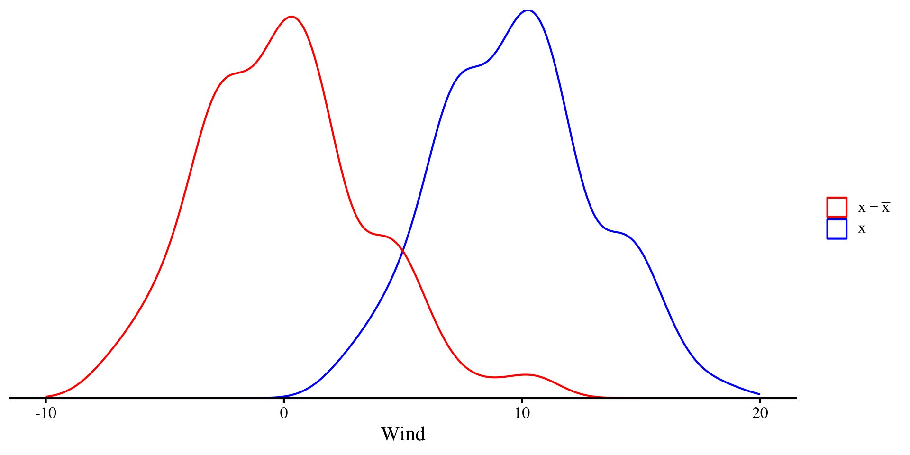
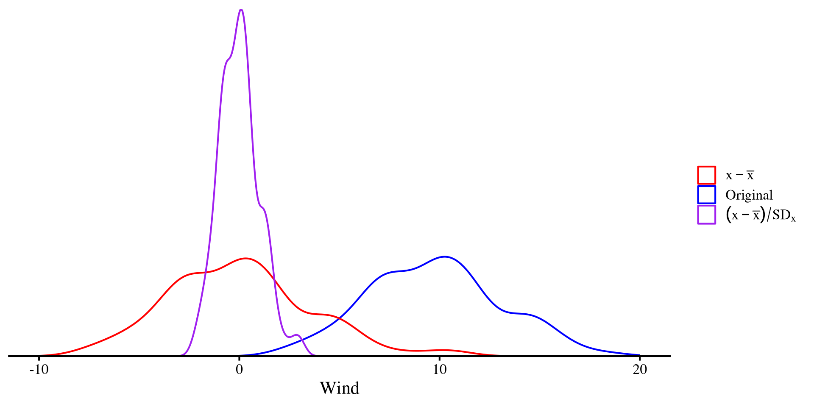
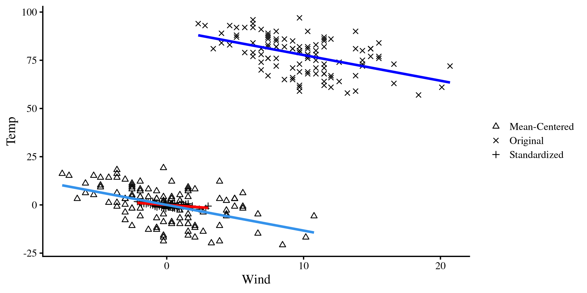

PSYC 7804 - Regression with Lab
Spring 2026
No new packages for today! I will only load tidyverse (mostly for ggplot2):
The one extra bit of code that you will see me include in the first slide from now on is the following:
This sets the default style and font for all the plots in the slide deck.
In Lab 1 we ran a regression with wind speed (Wind) predicting temperature (Temp)
Call:
lm(formula = Temp ~ Wind, data = dat)
Residuals:
Min 1Q Median 3Q Max
-19.111 -5.645 1.013 6.255 18.889
Coefficients:
Estimate Std. Error t value Pr(>|t|)
(Intercept) 91.0226 2.3479 38.767 < 2e-16 ***
Wind -1.3311 0.2225 -5.982 2.85e-08 ***
---
Signif. codes: 0 '***' 0.001 '**' 0.01 '*' 0.05 '.' 0.1 ' ' 1
Residual standard error: 8.307 on 109 degrees of freedom
Multiple R-squared: 0.2472, Adjusted R-squared: 0.2402
F-statistic: 35.78 on 1 and 109 DF, p-value: 2.851e-08Where as wind increases, Temp decreases:
\[\hat{Y} = 91.02 - 1.33 \times \mathrm{Wind}\]
As we discussed, this is the equation that describes the the OLS regression line that goes through the scatterplot of Temp and Wind. This is known as the unstandardized regression formula.
The unstandardized regression formula is by no means the only way of writing regression equations. Let’s look at what happens when we apply linear transformations to our variables.
Without needing to give too formal of a definition, a linear transformation is a transformation of any variable such that the transformed variable is perfectly correlated with the original.
The two linear transformations that you will come across the most are mean-centering and Standardization:
Mean-centering simply involves subtracting the mean from the original variable: \[x_{\mathrm{cent}} = x - \bar{x}\]
The only difference is that \(x_{\mathrm{cent}}\) will have a mean of 0.
ggplot(dat, aes(x = Wind)) +
geom_density(aes(color = "Original")) +
geom_density(aes(x = Wind - mean(dat$Wind), color = "Centered")) +
xlim(c(-10, 20)) +
scale_y_continuous(expand = c(0,0)) +
scale_color_manual(
values = c("Original" = "blue",
"Centered" = "red"),
name = "",
labels = c(
"Original" = expression(x),
"Centered" = expression(x - bar(x)))) +
theme(
axis.title.y = element_blank(),
axis.text.y = element_blank(),
axis.ticks.y = element_blank(),
axis.line.y = element_blank())
standardization involves mean-centering first and then dividing by the SD: \[x_{\mathrm{std}} = \frac{x_i - \bar{x}}{SD_x}\]
Dividing by the SD “squishes” the distribution, but the shape does not change! The only difference is that \(x_{\mathrm{std}}\) will have a mean of 0 and a standard deviation of 1.
ggplot(dat, aes(x = Wind)) +
geom_density(aes(color = "Original")) +
geom_density(aes(x = Wind - mean(dat$Wind), color = "Centered")) +
geom_density(aes(x = (Wind - mean(dat$Wind)) / sd(dat$Wind),
color = "Standardized")) +
xlim(c(-10, 20)) +
scale_y_continuous(expand = c(0,0)) +
scale_color_manual(
values = c("Original" = "blue",
"Centered" = "red",
"Standardized" = "purple"),
name = "",
labels = c(
"Raw" = expression(x),
"Centered" = expression(x - bar(x)),
"Standardized" = expression((x - bar(x)) / SD[x])
)
) +
theme(
axis.title.y = element_blank(),
axis.text.y = element_blank(),
axis.ticks.y = element_blank(),
axis.line.y = element_blank())
RAlthough it is pretty simple to do it manually, we can use the scale() function to mean-center and standardize variables. Let’s do it for both Wind and Temp:
And we have added both the mean-centered and standardized versions of the variables to the data:
[1] "Case" "NY_Ozone" "SolR" "Temp" "Wind" "Wind_new"
[7] "Wind_cnt" "Temp_cnt" "Wind_std" "Temp_std"Now, there are an infinite number of linear transformations (e.g., \(x + 1, x + 2, \dots ,x + \infty\)). So what is so special about mean-centering and standardization? 🤔 Nothing much really, but they can be very helpful for interpreting regression results and hopefully this will become clearer throughout the course (although, standardized variables have nice mathematical properties!).
The unstandardized regression equation is \(\hat{Y} = 91.02 - 1.33 \times \mathrm{Wind}\)
Call:
lm(formula = Temp_cnt ~ Wind_cnt, data = dat)
Residuals:
Min 1Q Median 3Q Max
-19.111 -5.645 1.013 6.255 18.889
Coefficients:
Estimate Std. Error t value Pr(>|t|)
(Intercept) -2.136e-15 7.884e-01 0.000 1
Wind_cnt -1.331e+00 2.225e-01 -5.982 2.85e-08 ***
---
Signif. codes: 0 '***' 0.001 '**' 0.01 '*' 0.05 '.' 0.1 ' ' 1
Residual standard error: 8.307 on 109 degrees of freedom
Multiple R-squared: 0.2472, Adjusted R-squared: 0.2402
F-statistic: 35.78 on 1 and 109 DF, p-value: 2.851e-08the mean-centered regression equation is:
\[\hat{Y} = 0 - 1.33 \times \mathrm{Wind}\]
Not much has changed. The only difference is that the intercept is now 0 🧐 why that happens will be clearer later once we look at this regression graphically.
For now, let’s look at the standardized counterpart.
The unstandardized regression equation is \(\hat{Y} = 91.02 - 1.33 \times \mathrm{Wind}\), while the mean-centered regression equation is \(\hat{Y} = 0 - 1.33 \times \mathrm{Wind}\).
Call:
lm(formula = Temp_std ~ Wind_std, data = dat)
Residuals:
Min 1Q Median 3Q Max
-2.0053 -0.5923 0.1063 0.6563 1.9821
Coefficients:
Estimate Std. Error t value Pr(>|t|)
(Intercept) -4.739e-17 8.273e-02 0.000 1
Wind_std -4.971e-01 8.311e-02 -5.982 2.85e-08 ***
---
Signif. codes: 0 '***' 0.001 '**' 0.01 '*' 0.05 '.' 0.1 ' ' 1
Residual standard error: 0.8716 on 109 degrees of freedom
Multiple R-squared: 0.2472, Adjusted R-squared: 0.2402
F-statistic: 35.78 on 1 and 109 DF, p-value: 2.851e-08We can see that although the equations are “different” (they are not actually), the plots are the exact same.
The only thing that changes when we plot the regression separately are the values on the axes.
We can plot the 3 regressions on the same plot to get a general sense of what is happening. All linear transformations do is move around the dots on the same cartesian plane 😀
Also notice that both the mean-centered and unstandardized regression lines are now centered at 0. That is why both of their interecept are exactly 0.
# Combine your data into a long format or add a "type" variable
dat_long <- data.frame(
x = c(dat$Wind_std, dat$Wind, dat$Wind_cnt),
y = c(dat$Temp_std, dat$Temp, dat$Temp_cnt),
type = factor(rep(c("Standardized", "Original", "Mean-Centered"),
times = c(nrow(dat), nrow(dat), nrow(dat))))
)
ggplot() +
# Points with legend
geom_point(data = dat, aes(x = Wind_std, y = Temp_std, shape = "Standardized")) +
geom_point(data = dat, aes(x = Wind, y = Temp, shape = "Original")) +
geom_point(data = dat, aes(x = Wind_cnt, y = Temp_cnt, shape = "Mean-Centered")) +
# Regression lines without legend
geom_smooth(data = dat, aes(x = Wind_std, y = Temp_std), method = "lm", se = FALSE, color = "red", show.legend = FALSE) +
geom_smooth(data = dat, aes(x = Wind, y = Temp), method = "lm", se = FALSE, color = "blue", show.legend = FALSE) +
geom_smooth(data = dat, aes(x = Wind_cnt, y = Temp_cnt), method = "lm", se = FALSE, show.legend = FALSE) +
# Labels and manual shapes
labs(
x = "Wind",
y = "Temp",
shape = ""
) +
scale_shape_manual(values = c("Standardized" = 3, "Original" = 4, "Mean-Centered" = 2))
Although the conclusion about the relation between Wind and Temp that we make from all of these are the exact same, there are some small nuances in the interpretation of each:
\[\hat{Y} = 91.02 - 1.33 \times \mathrm{Wind}\]
\(\beta_0 = 91.02\): the expected (i.e., mean) value of Temp when Wind = 0.
\(\beta_1 = -1.33\): for each 1-unit increase in Wind, we expect Temp to decrease by \(1.33\).
\[\hat{Y} = 0 - 1.33 \times \mathrm{Wind}\]
\(\beta_0 = 0\): the expected (i.e., mean) value of Temp when Wind = 0. If you remember, centered variables have a mean of 0 exactly, so this checks out.
\(\beta_1 = -1.33\): for each 1-unit increase in Wind, we expect Temp to decrease by \(1.33\). Same as before.
\[\hat{Y} = 0 - 0.5 \times \mathrm{Wind}\]
\(\beta_0 = 0\): the expected (i.e., mean) value of Temp when Wind = 0.
\(\beta_1 = -0.5\): for each 1 standard deviation increase in Wind, we expect Temp to decrease by 0.5 standard deviations. By “standard deviations” I mean what is known as Z-scores.
So far we have talked about the interpretation of regression coefficients. However, we are often interested in gaining insight from our sample to make inferences about the population! Usually, we want to know whether there is a relation between some variables in the population, not the sample. In regression terms this is equivalent to asking:
One way this can be done is by using p-values, which I am not going to go into details about (mostly because I think they are a bit useless 🫣)
Estimate Std. Error t value Pr(>|t|)
(Intercept) 91.022556 2.3479432 38.766933 1.371942e-65
Wind -1.331131 0.2225239 -5.981968 2.851176e-08\(b_0 = 91.02\), \(t(109) = 38.77, p < .001\)
\(b_1 = -1.33\), \(t(109) = -5.98, p < .001\)
The summary provides the \(t\)-statistic and the associated \(p\)-value. The degrees of freedom are given by \(n - k - 1 = 111 - 1 - 1 = 109\), where \(n\) is the sample size and \(k\) is the number of predictors.
We don’t care much about the intercept. We care about the slope, and here we conclude that it is “significantly different from 0” because \(p < .05\).
“What about the mean-centered and standardized slope? Are they significantly different from 0? 🧐” one may ask (yes they are).
The \(t\)-statistics associated with the slopes are exactly the same.
Estimate Std. Error t value Pr(>|t|)
(Intercept) 91.023 2.348 38.767 0
Wind -1.331 0.223 -5.982 0 Estimate Std. Error t value Pr(>|t|)
(Intercept) 0.000 0.788 0.000 1
Wind_cnt -1.331 0.223 -5.982 0 Estimate Std. Error t value Pr(>|t|)
(Intercept) 0.000 0.083 0.000 1
Wind_std -0.497 0.083 -5.982 0In other words, we are testing the exact same hypotheses, and, as I mentioned some slides ago, regardless of how we linearly transform our variables, we conclude that there is a significant raletion between Wind and Temp.
Then which regression is best to report? 🤔 I am of the opinion that in the vast majority of cases, the standardized regression is the way to go. That is because the slope always has the exact same interpretation and scale.
The “practical problem” with unstandardized slopes is that the interpretation becomes hard if one is not familiar with the units of the variable. For example, I am European, so I don’t have a good sense of whether a change in 1.33 degrees Fahrenheit is a lot or not 🤷
Confidence intervals are essentially equivalent to p-values. Given that the convention for significance is p < .05, we generally report \(95\%\) confidence intervals. we can use the confint() function to extract \(95\%\) confidence intervals for our regression coefficients:
Confidence intervals are always symmetric and do not include 0 if the value is significantly different from 0.
If the value is not significantly different from 0, then they will include 0 (for example, look at the intercept for the mean-centered regression).
You can use the level = argument to change the percentage of the confidence interval (e.g., confint(reg_std, level = .99) for \(99 \%\) CI).
PSYC 7804 - Lab 2: Linear Transformations and Significance Tests